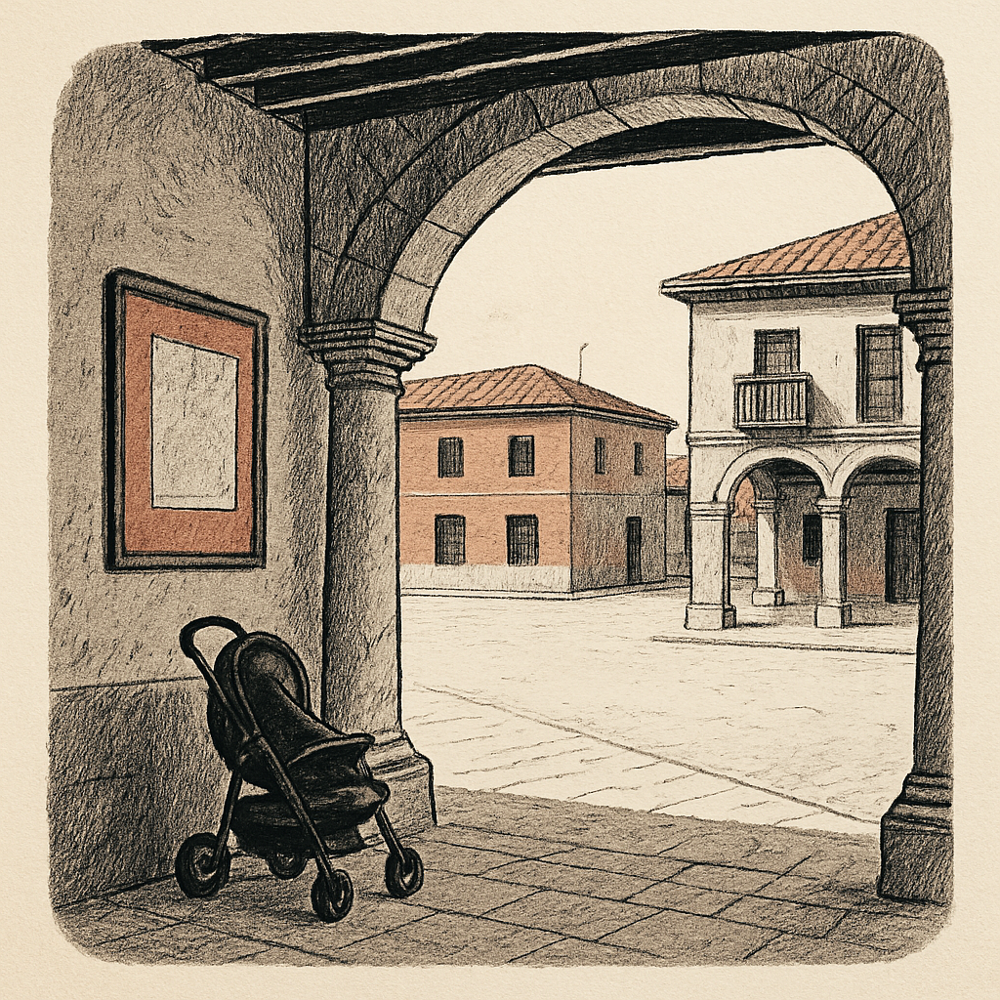
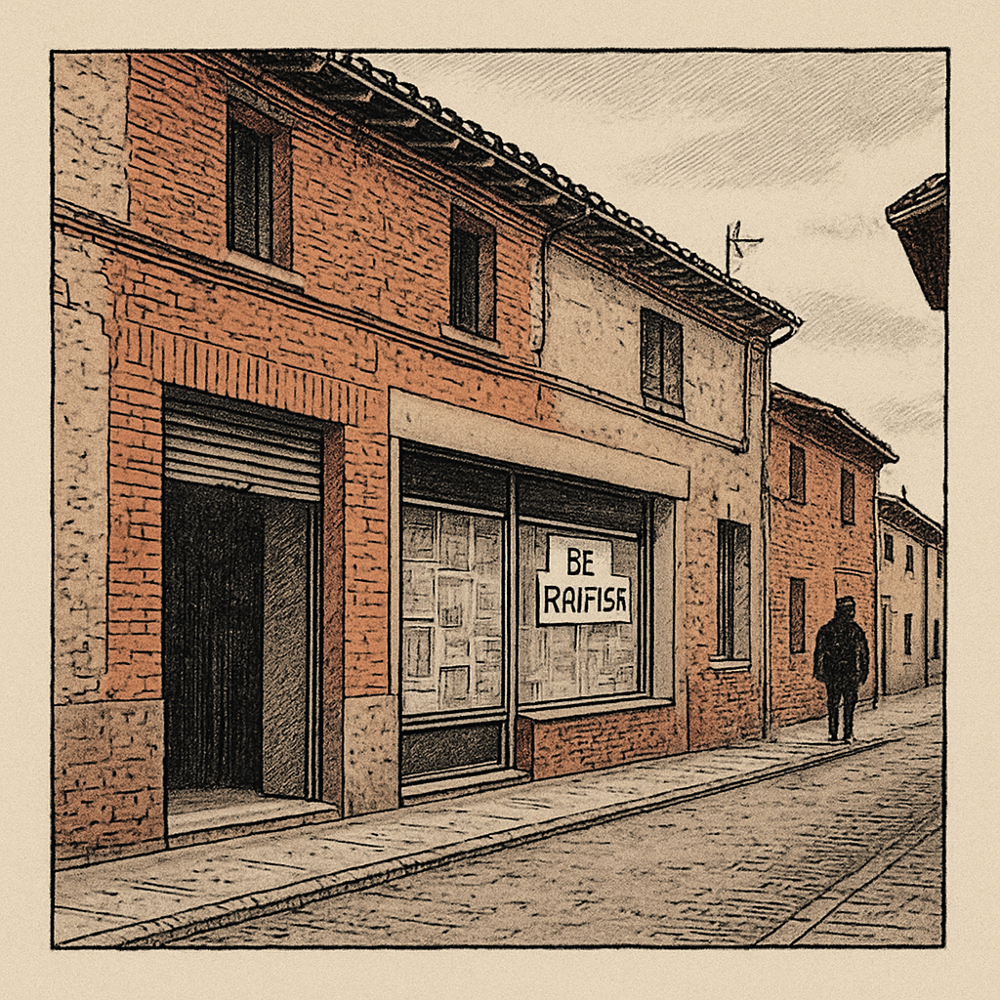

viernes, 17 de julio de 2026
Lo que pasa en los pueblos de Tierra de Campos, contado claro y con la fuente al lado.
«Verano seco, invierno cubierto.» · Hoy es Santas Justa y Rufina de Sevilla · 🌒 Luna creciente
Hoy en Tierra de Campos, despejado y entre 16° y 18°. El pueblo más caluroso ahora es Paredes de Nava, con 18°.

Qué esconde el dinero público que llega a Tierra de Campos: 32 ayudas, 470.973 euros y un solo convenio que se lleva la mayoría La Base de Datos Nacional de Subvenciones registra por ley cada euro público que se convoca en España. Consultando lo que aparece a nombre de doce pueblos de la comarca y sus cuatro diputaciones, el resultado es más pequeño y más desigual de lo que suena la palabra subvención. Este es un repaso a esas 32 convocatorias, con sus fuentes y sus límites.
Villada pierde casi cuatro de cada diez negocios: el mapa de un vaciado que no espera Los datos del INE muestran que en varios municipios de Tierra de Campos el cierre de empresas avanza tan rápido como la pérdida de vecinos, y en algunos casos más deprisa. La escena que abre este reportaje es un personaje compuesto, construido a partir de esos datos; el resto de cifras son reales y verificadas.Julio aprieta de calor y seca la tierra. El riego es lo primero: constante y a horas frescas. Recolecta ajo y cebolla para curar, y las primeras judías y calabacines. Aún puedes sembrar judía de ciclo corto y acelga para otoño.
Un canal por pueblo: el tiempo, las noticias, la agenda de fiestas, alguna historia de aquí y una foto de vez en cuando. Sin ruido de fuera.